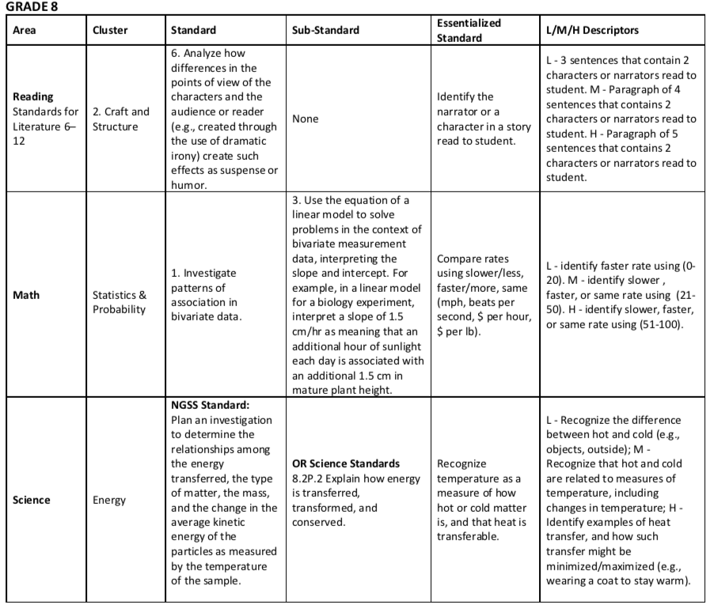
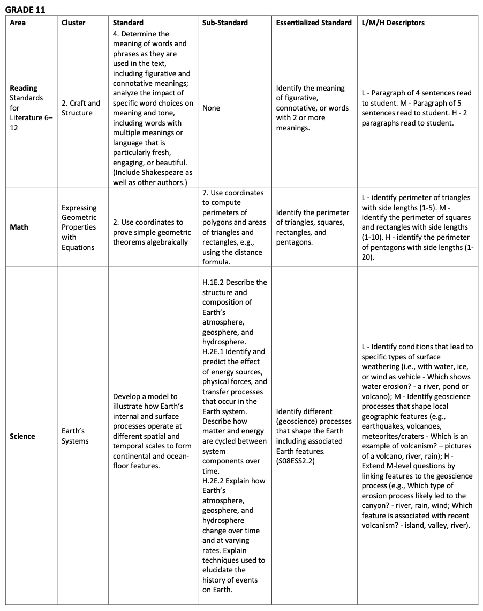
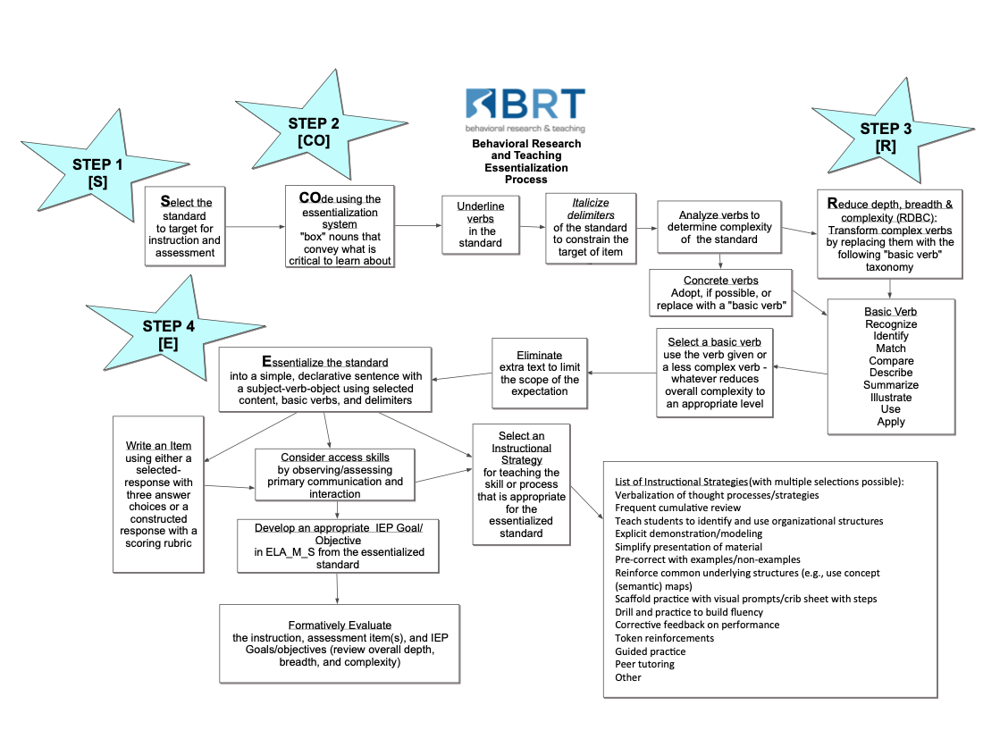
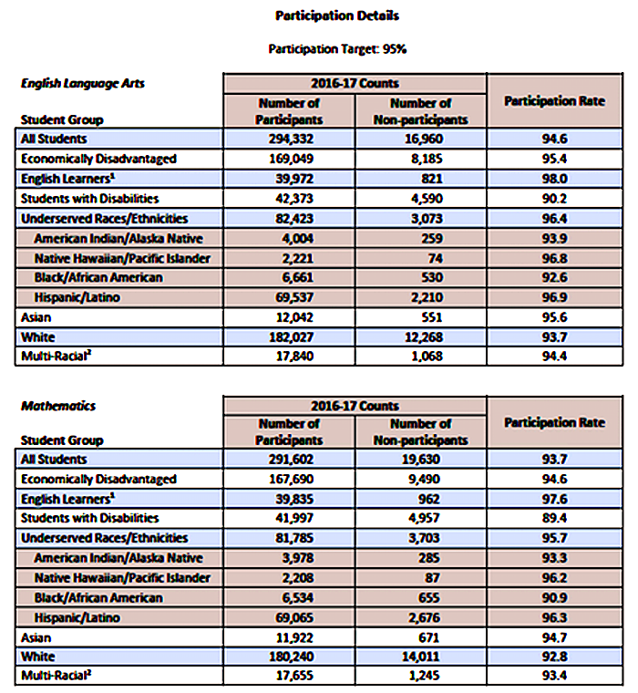

| grade_bands | participation |
|---|---|
| Grade 3-5 | 88.9% |
| Grade 6-8 | 90.1% |
| Grade 11 | 83.4% |
| grade_bands | participation |
|---|---|
| Grade 3-5 | 88.5% |
| Grade 6-8 | 89.2% |
| Grade 11 | 81.4% |
The Oregon State Board of Education (SBE) adopted new, challenging academic content standards, the Common Core State Standards (CCSS), in English language arts and mathematics in Grades K-12 on October 28, 2010. These CCSS are utilized for all students in Oregon’s public schools. Oregon was actively involved in the development of the CCSS, as the Oregon Department of Education (ODE), the Educational Enterprise Steering Committee (EESC), Oregon’s Education Service Districts, and school district representatives provided feedback on the draft CCSS standards.
Similarly, the SBE adopted the Next Generation Science Standards (NGSS) on March 6, 2014. The NGSS establish learning targets for all students in Oregon’s public schools in Grades K-12. The ODE and the Oregon Science Content and Assessment Panel provided direct feedback related to the NGSS. The NGSS are being phased in over time instructionally, so students are being assessed relative to the Oregon Science (ORSci) standards that were adopted in 2009.
The newly adopted academic content standards were then reduced in depth, breadth, and complexity through a process called essentialization. The new Essentialized Assessment Frameworks (EAFs) were then used for item writing for the ORExt. The tables below provide examples of essentialized standards in grades 5, 8, & 11 in the subject areas of English language arts (ELA), mathematics, and science. In the right column are designations for estimated difficulty of an item: L (low), M (medium), and H (high). More information on the essentialization process can be found in section 1.2.
See (TestSpec?), for a User Guide that explains the development process and intended uses for the EAFs.



The CCSS, ORSci, and NGSS define what students in Oregon should know and be ableto do by the time they graduate from high school. These CCSS, which were developed by national stakeholders and education experts, have been determined to be coherent and rigorous by researchers at the Carmichael et al. (2010). They were also developed with wide stakeholder involvement, particularly here in Oregon. The new ORExt is linked directly to the content in the CCSS in English language Arts (reading, writing, & language) and mathematics. The ORExt is dually linked to the ORSci as well as the NGSS. The NGSS are widely accepted by most relevant science instruction organizations as reflective of rigorous and coherent science concepts.
The new Essentialized Assessment Frameworks (EAFs) are publicly available. A User Guide is provided to instruct educators regarding the intended uses of the Essentialized Standards (EsSt), including the development of Present Levels of Academic Achievement and Functional Performance (PLAAFP) and Individualized Education Program (IEP) goals and objectives. The basic essentialization process employed to generate essentialized standards and write aligned items for the ORExt is outlined below. The process can also be used to support the development of curricular and instructional materials, founded in research-based pedagogy.

The ORExt assessments were administered in the 2021-22 school year in ELA and Math in grades 3-8 and grade 11; Science is assessed in grades 5, 8, & 11. This assessment plan meets the requirements for grade level assessment in grades 3-8 and once in high school (grades 10-12) for ELA and Mathematics, while Science is assessed once in the 3-5 grade band, once in the 6-9 grade band, and once in the 10-12 grade band:
| Content Area | Grade 3 | Grade 4 | Grade 5 | Grade 7 | Grade 8 | Grade 11 |
|---|---|---|---|---|---|---|
| English Language Arts | X | X | X | X | X | X |
| Mathematics | X | X | X | X | X | X |
| Science | X | X | X |
Originally, Oregon statute required that all students participate in statewide assessments, with exceptions allowed for district-approved parent request for assessment waivers (parent opt-out requests) related to student disability or religious beliefs (see Oregon Administrative Rule, OAR § 581-022-0612).
Exception of Students with Disabilities from State Assessment Testing: (1) For the purposes of this rule a “student with a disability” is a student identified under the Individuals with Disabilities Education Act, consistent with OAR chapter 581, division 015, or a student with a disability under Section 504 of the Rehabilitation Act of 1973; (2) A public agency shall not exempt a student with a disability from participation in the Oregon State Assessment System or any district wide assessments to accommodate the student’s disability unless the parent has requested such an exemption.
However, House Bill 2655 established a Student Bill of Rights on January 1, 2016, which permitted parents or adult students to annually opt-out of Oregon’s statewide summative assessments, pursuant to OAR § 581-022-1910.
The Governor published a memorandum for Superintendents, Principals, and District Test Coordinators related to the change (ODE (2016)).
The expectation that all students in the assessed grades participate, including students with disabilities, is elaborated clearly and pervasively across all guidance documents. For example in the Oregon Test Administration Manual (TAM), where it states that, “All students enrolled in grades 3-8 and in high school must take the required Oregon Statewide Assessments offered at their enrolled grade, including students re-enrolled in the same grade as in the prior year, unless the student receives a parent-requested exemption…” (TestAdministrationManual).
English learners are included as appropriate in Oregon’s statewide assessment system. (ELProgramGuide). The Smarter Balanced assessment directions are translated into multiple languages and available via the Oaks portal. OAR 581-022-0620 (2) requires ODE to provide translated OAKS assessments for populations at or above 9% in grades K-12 within three years after the school year in which the language exceeds the threshold (OregonSe38:online). In addition, the accommodations available to students who participate in the ORExt include translation into the native language, where appropriate (AccessibilityManual).
The ORExt is not administered in a native language format, though it can be translated into a student’s home language.
Oregon’s participation data indicate that most students in the tested grade levels are included in our assessment system. The students with disabilities subgroup did not meet minimum participation requirements in 2017-18, the most current data available at the time of this report, in English Language Arts or Mathematics, with rates at 87.5% and 86.4%, respectively. See the table below for a summary of participation. Documentation of this requirement is provided within the Annual Performance Report, Indicator B3, which is submitted to the United States Department of Education’s (USED’s) Office of Special Education Programs (OSEP). Participation and performance summaries are provided below. Additional information regarding state performance is published in the 2017-18 Statewide Report Card (see Appendix 1.5, pages 1-16 for student and teacher demographics and pages 38-41 for assessment information).

| grade_bands | participation |
|---|---|
| Grade 3-5 | 88.9% |
| Grade 6-8 | 90.1% |
| Grade 11 | 83.4% |
| grade_bands | participation |
|---|---|
| Grade 3-5 | 88.5% |
| Grade 6-8 | 89.2% |
| Grade 11 | 81.4% |